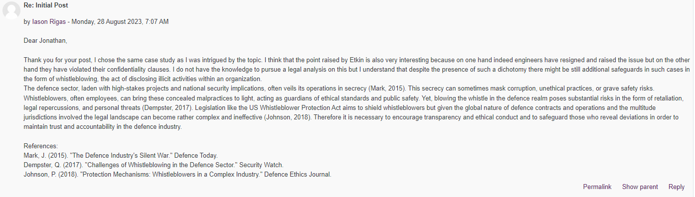

In unit 3 the focus was research design looking into research strategies and methods for data collection and analysis. Exploratory, conclusive, descriptive, qualitative, quantitative and mixed methods were discussed as different research strategies in support of a proposal.
Activity- collaborative discussion conclusionI made two contributions to the forum, one regarding a case on abusive workplace behavior and one regargind the autonomous weapon systems. In the former, I highlighted how abuse is also an organisational issue which seemed to be part of the DNA of this company in the specific example, and how we need to look into such cases not as isolated incidents but as them being part of the wider organisational culture.
In the second one I participated in the discussion on whether engineers disclosing malpractices violated their NDAs. I looked for commentary on other cases and on how to balance on one hand the need for secrecy and NDAs and on the other hand whistleblowing rules and regulations.

In the end I made a summary post capturing those discussions as well within my own thread.